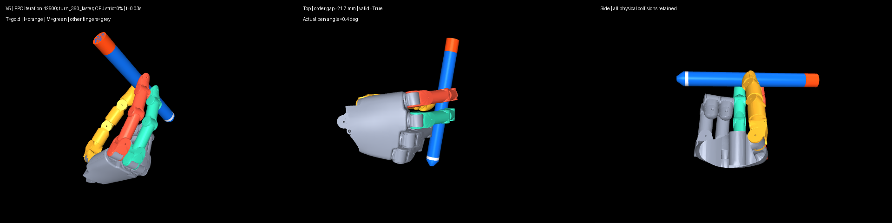

真人参考 A（已批准片段）
参考
仅供动作审阅；未经三维接触与时相标定。
当前 3 秒整圈 0/24，双指相向夹持与三次交接均未达标；10 秒与 6 秒固定验证各 24/24。所有机器人片段是 CPU MuJoCo 闭环策略 rollout；物理门槛通过不等于真人动作审阅通过。训练仍在进行，此页不是最终结果。
参考
仅供动作审阅；未经三维接触与时相标定。
通过指定检查
固定验证种子 24/24 物理严格通过；人工动作相似性待审阅。
通过指定检查
固定验证种子 24/24 物理严格通过；该权重与额外未见种子诊断权重不同。
仅诊断
另一个第 1500 轮权重，未见种子 23/24；不能将结果归给固定验证所选权重。
失败
最新已完成评估的模型：0/24。平均转角 352.10°，但双指相向夹持、三次交接均 24/24 未达标，22/24 提前结束。
